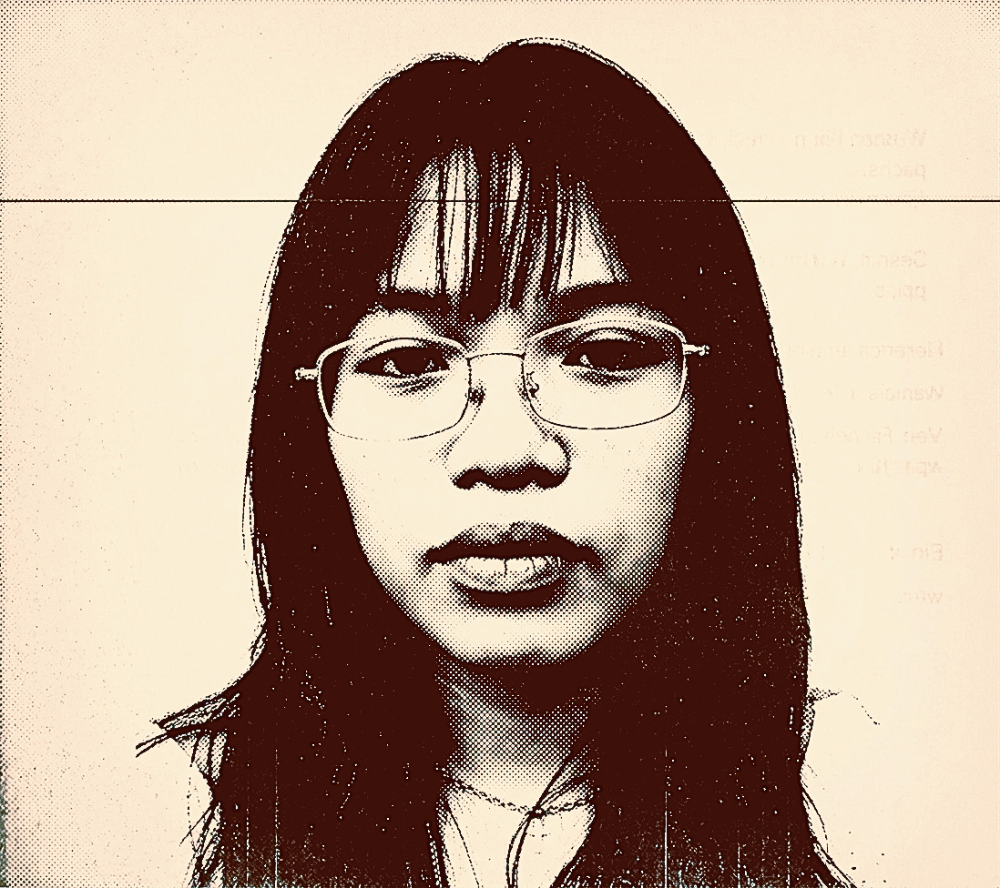

The Curator
Juvy Guira | 21 • Future Educator & Tech Enthusiast

As an ICT Education major, my daily routine revolves around three main things: troubleshooting code, lesson planning, and chasing the ultimate midnight coffee fix.
Why Cubao Midnight Brews?
Navigating the intersection of technology and education demands focus, resilience, and caffeine. Manila comes alive after dark, offering quiet sanctuaries away from daytime traffic and noise. This guide was born out of midnight study sessions, late-night coding marathons, and the search for authentic atmospheres that foster creativity.
Why Trust These Recommendations?
Every spot featured here has been personally vetted during real midnight study sessions. I evaluate venues based on three strict criteria: ambient atmosphere, reliable coffee or food options, and an inspiring environment for nocturnal thinkers.